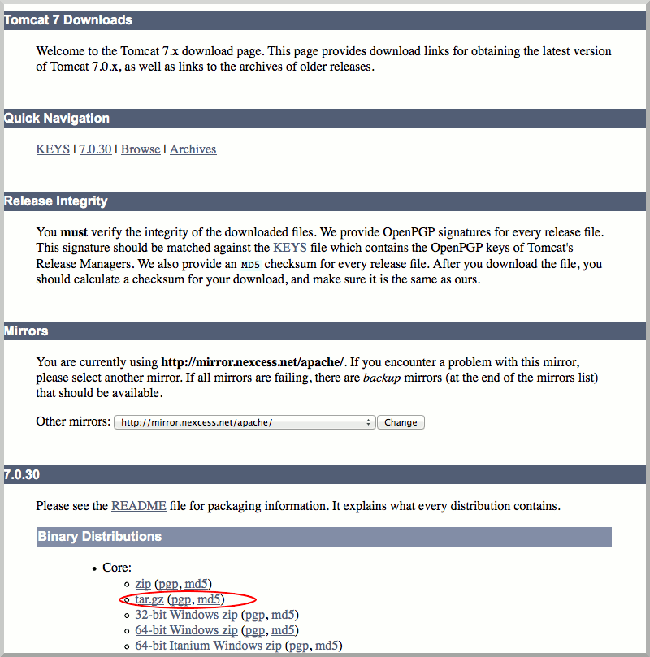

Installing on OS X
Installing RAMADDA involves the installation of these three software packages:
- Java
- Apache Tomcat
- RAMADDA
We will now go through each of steps in detail. You will need to know how to open the Terminal.app located in the Applications > Utilities folder and issue Unix shell commands. You also must have sudo privileges.
Java Installation (instructions borrowed from Adobe)
- Go to Applications > Utilities > Java Preferences
- Open the Java Preferences
- If Java is not installed, you will receive the following message:
- Click Install and accept the license agreement. The Java runtime is downloaded and installed.
Tomcat Installation (instructions borrowed from Wolf Paulus)
- Download a tar.gz binary distribution of the Apache Tomcat core module.

- Unarchive the tar.gz file. You can uncompress this file with the Unarchiver. This action should result in a file called
apache-tomcat-x.y.z in your Downloads folder. (x.y.z stands for the particular version of Apache Tomcat you downloaded)
- Start the Terminal.app and issue the following commands
sudo mkdir /usr/localsudo mv ~/Downloads/apache-tomcat-x.y.z /usr/localsudo ln -s /usr/local/apache-tomcat-x.y.z /Library/Tomcatsudo chown -R your_username /Library/Tomcatsudo chmod +x /Library/Tomcat/bin/*.sh
RAMADDA Installation
- Download the RAMADDA WAR (web application archive) file.
mv ~/Downloads/repository.war /Library/Tomcat/webapps/Library/Tomcat/bin/startup.sh- In your browser, navigate to http://localhost:8080/repository If you see the following screen, you have successfully installed RAMADDA.
You are now ready to to set up the admin account in RAMADDA.